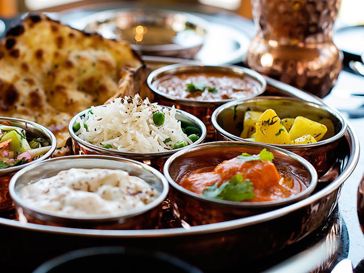

Vegetarian's Elight
Thinking about making the transition to a full vegetarian diet?
Here are some of our recipes for why it may be right for you.

-
On top of the list of Vegetarian dishes Paneer is the first thing to come in our mind
-
-
When you have a spicy meal, a Sweet dish is obviously deserved after it !
-
Looking for Fast Food ?
-
Punjabi Food with Punjab Da Swag
-